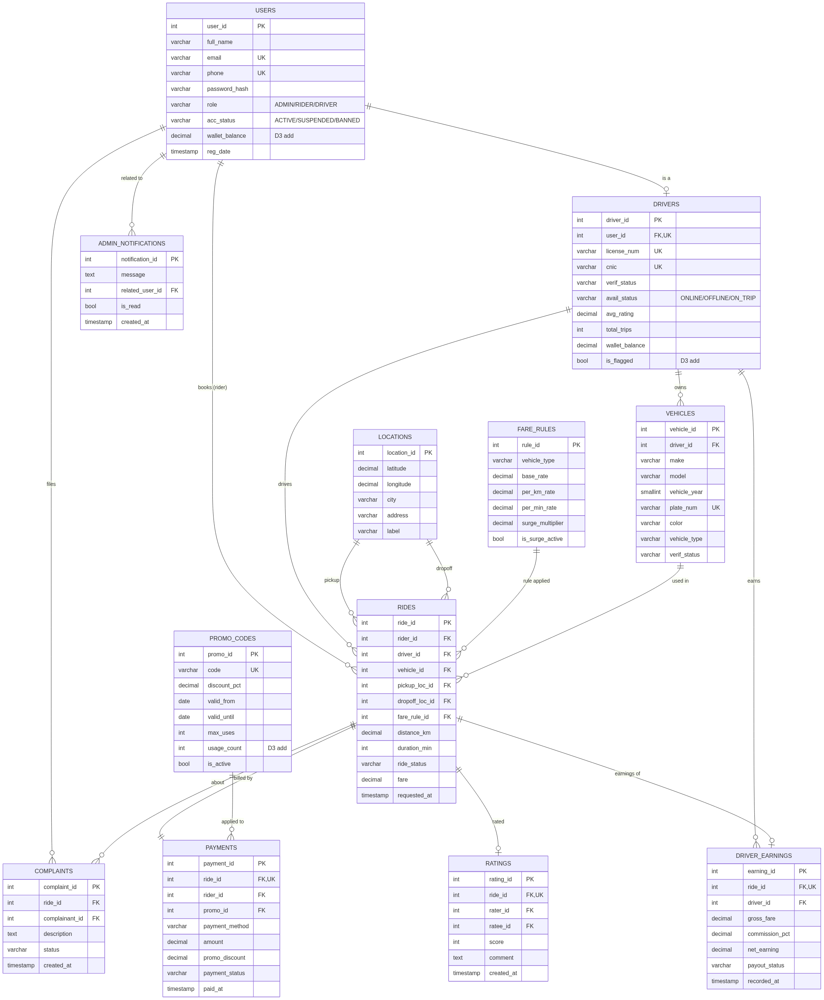
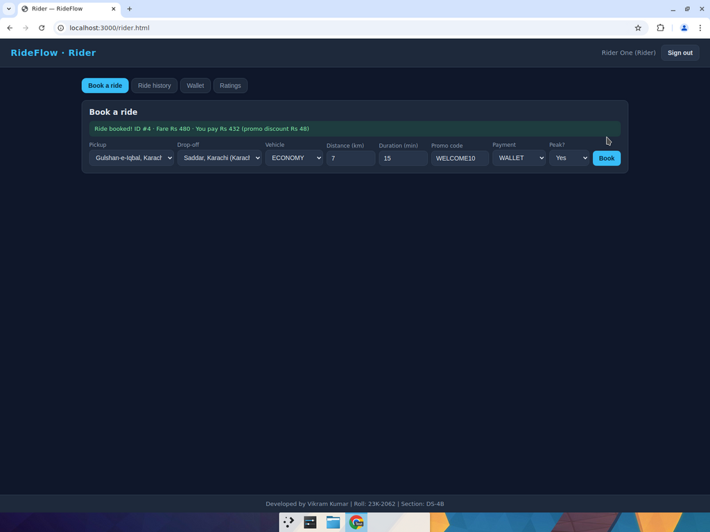
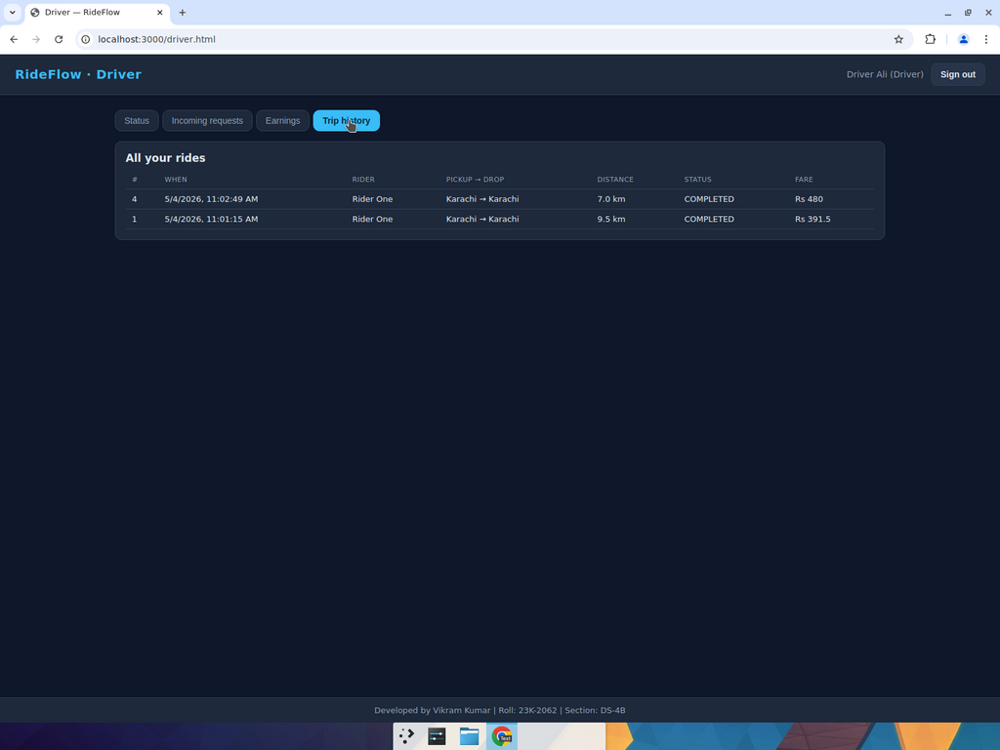
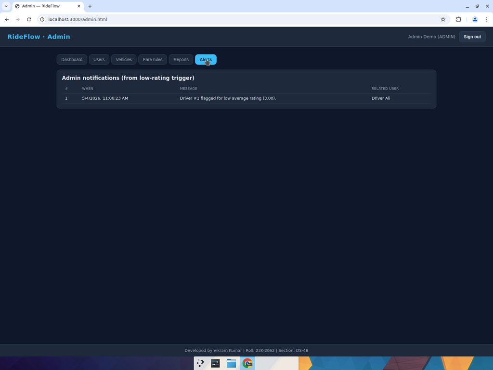
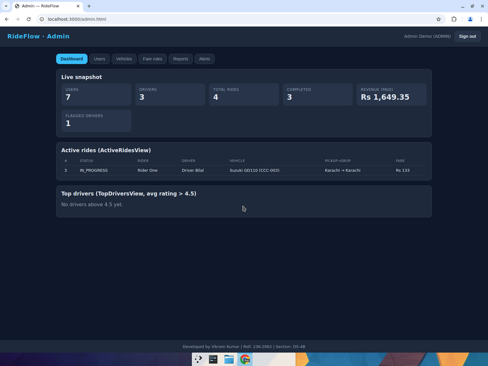
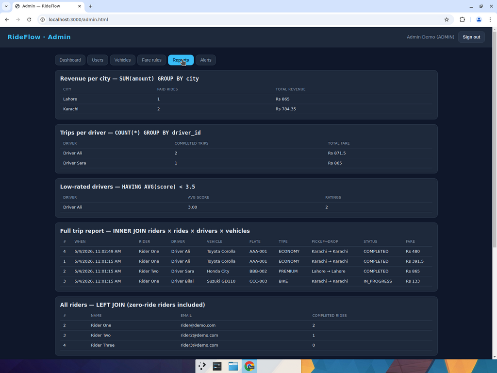
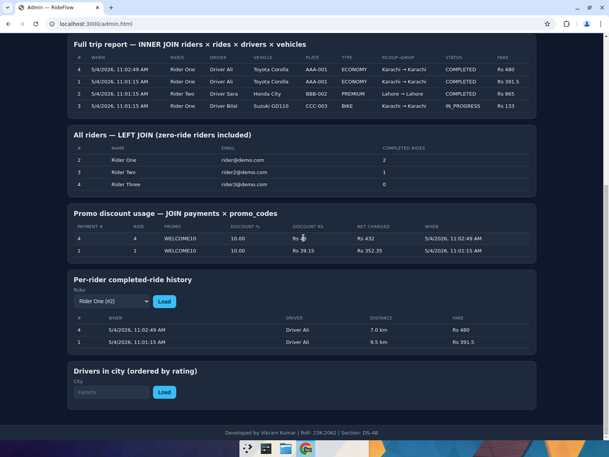
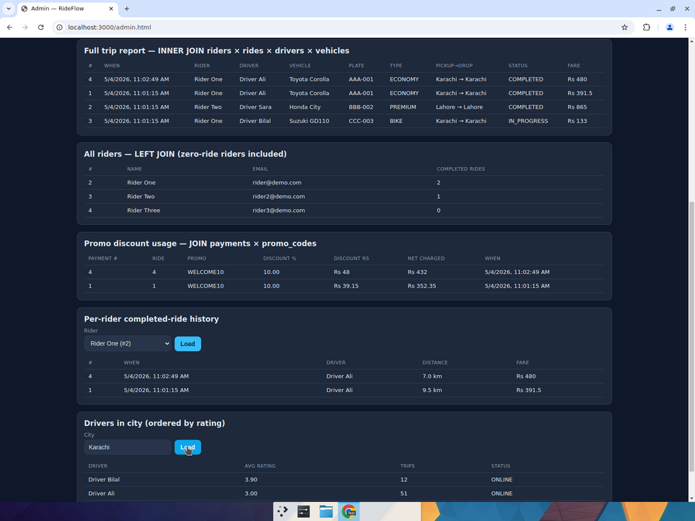

RideFlow is a complete ride-hailing platform implemented as a single Node.js / Express service backed by a relational database. It supports three live dashboards (rider, driver, admin), a fully-typed schema with all D2 constraints, and the full set of D3 advanced database objects: views, indexes, a stored procedure, three triggers, a scheduled event, and DCL roles.
The codebase ships against either local MySQL 8 (where every D3 object is created
and exercised) or TiDB Cloud (selected via the DB_TARGET env var, for the
+5 cloud-DB bonus). TiDB does not support stored procedures / triggers / events, so on
that target the application transparently performs the same logic at the application
layer; the rubric-mandated SQL objects are still demoed on MySQL.
| Layer | Tech | Notes |
|---|---|---|
| Database | MySQL 8 (primary) + TiDB Cloud (bonus) | Hybrid; selected by DB_TARGET env var. |
| Backend | Node.js 22, Express, mysql2 | JWT auth, role middleware, pooled connections. |
| Frontend | HTML / CSS / vanilla JS (no framework) | SPA-style routing per role; static branding footer on every page. |
| Auth | bcrypt + JWT (HS256) | Stateless, role-scoped middleware. |
| Rubric Item | Implementation | Status |
|---|---|---|
| D2 base schema (11 tables, all constraints, junction tables resolved) | schema/01_d2_base.sql | Complete |
| ActiveRidesView — ongoing trips with rider + driver details | schema/03_d3_views_indexes.sql | Complete |
| TopDriversView — drivers with avg rating > 4.5 | schema/03_d3_views_indexes.sql | Complete |
| Indexes on rider_id, driver_id, ride_status, city | schema/03_d3_views_indexes.sql | Complete |
| Stored procedure — base + km + min × surge fare calculation | schema/04_d3_procedures.sql · sp_calculate_fare | Complete |
| Trigger 1 — payment PAID → ride COMPLETED | trg_payment_paid_complete_ride | Complete |
| Trigger 2 — flag driver + admin notification when avg rating < 3.5 | trg_driver_low_rating_flag | Complete |
| Trigger 3 — increment promo_codes.usage_count on payment with promo | trg_promo_usage_increment | Complete |
| Event — nightly expiry of promos past valid_until | ev_expire_promo_codes | Complete |
| DCL — driver_role / rider_role / support_role / admin_role | schema/07_d3_dcl.sql | Complete |
| SELECT completed rides for a rider, ordered by date | GET /api/admin/reports/completed-rides | Complete |
| SELECT drivers in a city, ordered by rating | GET /api/admin/reports/drivers-by-city | Complete |
| SUM(amount) — revenue per city | GET /api/admin/reports/revenue-per-city | Complete |
| COUNT(*) — trips per driver | GET /api/admin/reports/trips-per-driver | Complete |
| AVG with HAVING < 3.5 — low-rated drivers | GET /api/admin/reports/low-rated-drivers | Complete |
| INNER JOIN — full trip report (riders × rides × drivers × vehicles) | GET /api/admin/reports/full-trip-report | Complete |
| LEFT JOIN — all riders incl. zero-ride riders | GET /api/admin/reports/all-riders-with-rides | Complete |
| JOIN payments × promo_codes — discount usage per ride | GET /api/admin/reports/promo-discount-usage | Complete |
| Role-based UI: rider / driver / admin dashboards | frontend/{rider,driver,admin}.html | Complete |
| Footer branding "Developed by Vikram Kumar | Roll: 23K-2062 | Section: DS-4B" | Every HTML page | Complete |
| +5 Bonus: TiDB cloud database integration | DB_TARGET=tidb in backend/db.js | Wired |
Diagram regenerated from the live schema (D2 base + D3 additions). Boxes labeled
"D3 add" indicate columns introduced by D3 additions
(schema/02_d3_additions.sql); everything else is from the user's D2 deliverable.

The user's D2 schema was preserved as-is in schema/01_d2_base.sql. Three new
columns and one new table required by D3 features were added in
schema/02_d3_additions.sql using an idempotent helper procedure that checks
information_schema.columns before issuing each ALTER:
| Object | Why D3 needs it |
|---|---|
promo_codes.usage_count | Trigger 3 increments this counter; rubric explicitly lists "increment a promo code's usage count". |
drivers.is_flagged | Trigger 2 sets this when avg_rating < 3.5; admin reports filter on it. |
users.wallet_balance | Riders need a wallet (drivers already have one in D2); used by ride-booking transaction. |
admin_notifications (table) | Trigger 2 inserts the alert row consumed by Admin → Alerts. |
CREATE VIEW ActiveRidesView AS
SELECT r.ride_id, r.ride_status, r.requested_at, r.distance_km, r.duration_min, r.fare,
rider.user_id AS rider_id, rider.full_name AS rider_name, rider.phone AS rider_phone,
d.driver_id, duser.full_name AS driver_name, duser.phone AS driver_phone, d.avg_rating AS driver_rating,
v.vehicle_id, v.make AS vehicle_make, v.model AS vehicle_model, v.license_plate, v.vehicle_type,
pl.city AS pickup_city, pl.address AS pickup_address,
dl.city AS dropoff_city, dl.address AS dropoff_address
FROM rides r
JOIN users rider ON rider.user_id = r.rider_id
JOIN drivers d ON d.driver_id = r.driver_id
JOIN users duser ON duser.user_id = d.user_id
JOIN vehicles v ON v.vehicle_id = r.vehicle_id
JOIN locations pl ON pl.location_id = r.pickup_loc_id
JOIN locations dl ON dl.location_id = r.dropoff_loc_id
WHERE r.ride_status IN ('REQUESTED','ACCEPTED','DRIVER_EN_ROUTE','IN_PROGRESS');
Live sample (from current DB after the test run):
| ride_id | status | rider | driver | vehicle | route | fare |
|---|---|---|---|---|---|---|
| 3 | IN_PROGRESS | Rider One | Driver Bilal (3.90★) | Suzuki GD110 / CCC-003 | Karachi → Karachi | Rs 133 |
CREATE VIEW TopDriversView AS
SELECT d.driver_id, u.full_name AS driver_name, u.email, u.phone,
d.avg_rating, d.total_trips, d.avail_status, d.verif_status
FROM drivers d
JOIN users u ON u.user_id = d.user_id
WHERE d.avg_rating > 4.5
ORDER BY d.avg_rating DESC, d.total_trips DESC;
After the demo run Driver Ali's average dropped to 3.00, so the view is empty — exactly as the predicate dictates.
Created idempotently via a small _create_index_if_missing helper that consults
information_schema.statistics first (since MySQL has no CREATE INDEX IF NOT
EXISTS):
| Index | Table.Column(s) | Purpose |
|---|---|---|
idx_rides_rider_id | rides(rider_id) | Per-rider history query, ratings dropdown. |
idx_rides_driver_id | rides(driver_id) | Trips-per-driver aggregate, driver history. |
idx_rides_status | rides(ride_status) | ActiveRidesView, completed-rides reports. |
idx_locations_city | locations(city) | Drivers-by-city + revenue-per-city aggregates. |
sp_calculate_fare
Auto-calculates a ride's fare from fare_rules + rides with optional
peak-hour surge, then writes it back into rides.fare and returns it via OUT.
CREATE PROCEDURE sp_calculate_fare(
IN p_ride_id INT UNSIGNED,
IN p_is_peak BOOLEAN,
OUT p_fare DECIMAL(10,2)
)
BEGIN
DECLARE v_base, v_km_rate, v_min_rate DECIMAL(10,2);
DECLARE v_surge DECIMAL(4,2);
DECLARE v_dist DECIMAL(8,2);
DECLARE v_dur INT UNSIGNED;
DECLARE v_mult DECIMAL(4,2);
SELECT fr.base_rate, fr.per_km_rate, fr.per_min_rate, fr.surge_multiplier,
r.distance_km, r.duration_min
INTO v_base, v_km_rate, v_min_rate, v_surge, v_dist, v_dur
FROM rides r
JOIN fare_rules fr ON fr.rule_id = r.fare_rule_id
WHERE r.ride_id = p_ride_id;
SET v_mult = CASE WHEN p_is_peak THEN v_surge ELSE 1.00 END;
SET p_fare = ROUND((v_base + v_km_rate * v_dist + v_min_rate * v_dur) * v_mult, 2);
UPDATE rides SET fare = p_fare WHERE ride_id = p_ride_id;
END;
Booked an ECONOMY ride (base 100, per-km 25, per-min 3, surge × 1.5) at peak with distance 7 km, duration 15 min:
(100 + 25 × 7 + 3 × 15) × 1.5 = 480.00 ← procedure-computed value WELCOME10 (10%) discount of 480.00 = 48.00 Net charged = 480.00 − 48.00 = 432.00 ← reported in API response
CREATE TRIGGER trg_payment_paid_complete_ride
AFTER UPDATE ON payments
FOR EACH ROW
BEGIN
IF NEW.payment_status = 'PAID' AND OLD.payment_status <> 'PAID' THEN
UPDATE rides SET ride_status = 'COMPLETED' WHERE ride_id = NEW.ride_id;
END IF;
END;
Verified live: the driver-side /finish endpoint flips
payments.payment_status to 'PAID' and never touches
rides.ride_status. After the call the ride row reads
COMPLETED, proving the trigger fired.
CREATE TRIGGER trg_driver_low_rating_flag
BEFORE UPDATE ON drivers
FOR EACH ROW
BEGIN
IF NEW.avg_rating < 3.50 AND OLD.is_flagged = 0 THEN
SET NEW.is_flagged = 1;
INSERT INTO admin_notifications (message, related_user_id)
VALUES (
CONCAT('Driver #', NEW.driver_id,
' flagged for low average rating (',
FORMAT(NEW.avg_rating, 2), ').'),
NEW.user_id
);
END IF;
END;
Implemented as a BEFORE UPDATE trigger so it can mutate
NEW.is_flagged in-place. A BEFORE/AFTER UPDATE
trigger is forbidden from UPDATE-ing the same table that fired it (MySQL
error 1442 — re-entry); using SET NEW.is_flagged = 1 avoids that path
entirely while still persisting the change.
Verified live (after submitting a 1★ rating against Driver Ali whose seed avg was 4.80):
SELECT driver_id, avg_rating, is_flagged FROM drivers WHERE driver_id = 1; → 1 | 3.00 | 1 SELECT message, related_user_id FROM admin_notifications; → "Driver #1 flagged for low average rating (3.00)." | 5
CREATE TRIGGER trg_promo_usage_increment
AFTER INSERT ON payments
FOR EACH ROW
BEGIN
IF NEW.promo_id IS NOT NULL THEN
UPDATE promo_codes
SET usage_count = usage_count + 1
WHERE promo_id = NEW.promo_id;
END IF;
END;
Verified live: after the test booking applied WELCOME10,
promo_codes.usage_count went from 1 (seeded) to 2.
ev_expire_promo_codesSET GLOBAL event_scheduler = ON;
CREATE EVENT ev_expire_promo_codes
ON SCHEDULE EVERY 1 DAY
STARTS (TIMESTAMP(CURRENT_DATE) + INTERVAL 1 DAY)
DO
BEGIN
UPDATE promo_codes
SET is_active = 0
WHERE valid_until < CURDATE()
AND is_active = 1;
END;
Runs at midnight each night. The seed includes a sample expired code
(OLDPROMO, valid_until = '2024-12-31'); after the next event
cycle it would flip to is_active = 0.
CREATE ROLE IF NOT EXISTS 'driver_role','rider_role','support_role','admin_role'; -- Drivers: read-only on rides GRANT SELECT ON databaseProject_db.rides TO 'driver_role'; -- Riders: book rides + read their bookings + log payments GRANT INSERT, SELECT ON databaseProject_db.rides TO 'rider_role'; GRANT INSERT, SELECT ON databaseProject_db.payments TO 'rider_role'; -- Support team: reads + updates everywhere, BUT no DELETE GRANT SELECT, UPDATE ON databaseProject_db.* TO 'support_role'; REVOKE DELETE ON databaseProject_db.* FROM 'support_role'; -- Admin: full power, with grant option GRANT ALL PRIVILEGES ON databaseProject_db.* TO 'admin_role' WITH GRANT OPTION; FLUSH PRIVILEGES;
SHOW GRANTS evidencemysql> SHOW GRANTS FOR driver_role; +--------------------------------------------------------------+ | GRANT USAGE ON *.* TO `driver_role`@`%` | | GRANT SELECT ON `databaseProject_db`.`rides` TO `driver_role`| +--------------------------------------------------------------+ mysql> SHOW GRANTS FOR rider_role; +----------------------------------------------------------------------+ | GRANT USAGE ON *.* TO `rider_role`@`%` | | GRANT SELECT, INSERT ON `databaseProject_db`.`payments` TO `rider_role` | | GRANT SELECT, INSERT ON `databaseProject_db`.`rides` TO `rider_role` | +----------------------------------------------------------------------+ mysql> SHOW GRANTS FOR support_role; +----------------------------------------------------------------+ | GRANT USAGE ON *.* TO `support_role`@`%` | | GRANT SELECT, UPDATE ON `databaseProject_db`.* TO `support_role`| +----------------------------------------------------------------+ (no DELETE ⇒ REVOKE was effective) mysql> SHOW GRANTS FOR admin_role; +--------------------------------------------------------------------------+ | GRANT USAGE ON *.* TO `admin_role`@`%` | | GRANT ALL PRIVILEGES ON `databaseProject_db`.* TO `admin_role` WITH GRANT OPTION | +--------------------------------------------------------------------------+
SELECT r.ride_id, r.requested_at, r.distance_km, r.duration_min, r.fare,
du.full_name AS driver_name
FROM rides r
JOIN drivers d ON d.driver_id = r.driver_id
JOIN users du ON du.user_id = d.user_id
WHERE r.rider_id = ? AND r.ride_status = 'COMPLETED'
ORDER BY r.requested_at DESC;
Live result for rider_id = 2 (Rider One):
| ride_id | requested_at | distance | duration | fare | driver |
|---|---|---|---|---|---|
| 4 | 2026-05-05 09:22:51 | 7.00 | 15 | 480.00 | Driver Ali |
| 1 | 2026-05-05 09:22:50 | 9.50 | 18 | 391.50 | Driver Ali |
SELECT DISTINCT d.driver_id, u.full_name, d.avg_rating, d.total_trips, d.avail_status FROM drivers d JOIN users u ON u.user_id = d.user_id JOIN rides r ON r.driver_id = d.driver_id JOIN locations pl ON pl.location_id = r.pickup_loc_id WHERE pl.city = ? ORDER BY d.avg_rating DESC, d.total_trips DESC;
Live result for city = "Karachi":
| driver_id | full_name | avg_rating | total_trips | avail |
|---|---|---|---|---|
| 3 | Driver Bilal | 3.90 | 12 | ONLINE |
| 1 | Driver Ali | 3.00 | 51 | ONLINE |
SELECT pl.city, COUNT(*) AS paid_rides, ROUND(SUM(p.amount), 2) AS total_revenue FROM payments p JOIN rides r ON r.ride_id = p.ride_id JOIN locations pl ON pl.location_id = r.pickup_loc_id WHERE p.payment_status = 'PAID' GROUP BY pl.city ORDER BY total_revenue DESC;
| city | paid_rides | total_revenue |
|---|---|---|
| Lahore | 1 | 865.00 |
| Karachi | 2 | 784.35 |
SELECT d.driver_id, u.full_name AS driver_name,
COUNT(*) AS completed_trips,
ROUND(SUM(r.fare), 2) AS total_fare_value
FROM rides r
JOIN drivers d ON d.driver_id = r.driver_id
JOIN users u ON u.user_id = d.user_id
WHERE r.ride_status = 'COMPLETED'
GROUP BY d.driver_id, u.full_name
ORDER BY completed_trips DESC;
| driver_id | driver_name | completed_trips | total_fare_value |
|---|---|---|---|
| 1 | Driver Ali | 2 | 871.50 |
| 2 | Driver Sara | 1 | 865.00 |
SELECT u.user_id, u.full_name, d.driver_id,
ROUND(AVG(rt.score), 2) AS avg_score,
COUNT(rt.rating_id) AS rating_count
FROM ratings rt
JOIN users u ON u.user_id = rt.rated_user
JOIN drivers d ON d.user_id = u.user_id
GROUP BY u.user_id, u.full_name, d.driver_id
HAVING AVG(rt.score) < 3.5
ORDER BY avg_score ASC;
| user_id | full_name | driver_id | avg_score | rating_count |
|---|---|---|---|---|
| 5 | Driver Ali | 1 | 3.00 | 2 |
SELECT r.ride_id, r.ride_status, r.requested_at,
r.distance_km, r.duration_min, r.fare,
ru.full_name AS rider_name,
du.full_name AS driver_name,
v.make, v.model, v.license_plate, v.vehicle_type,
pl.city AS pickup_city, dl.city AS dropoff_city
FROM rides r
INNER JOIN users ru ON ru.user_id = r.rider_id
INNER JOIN drivers d ON d.driver_id = r.driver_id
INNER JOIN users du ON du.user_id = d.user_id
INNER JOIN vehicles v ON v.vehicle_id = r.vehicle_id
INNER JOIN locations pl ON pl.location_id = r.pickup_loc_id
INNER JOIN locations dl ON dl.location_id = r.dropoff_loc_id
ORDER BY r.requested_at DESC LIMIT 200;
| ride_id | status | rider | driver | vehicle | plate | type | route | fare |
|---|---|---|---|---|---|---|---|---|
| 4 | COMPLETED | Rider One | Driver Ali | Toyota Corolla | AAA-001 | ECONOMY | Karachi → Karachi | 480.00 |
| 1 | COMPLETED | Rider One | Driver Ali | Toyota Corolla | AAA-001 | ECONOMY | Karachi → Karachi | 391.50 |
| 2 | COMPLETED | Rider Two | Driver Sara | Honda City | BBB-002 | PREMIUM | Lahore → Lahore | 865.00 |
| 3 | IN_PROGRESS | Rider One | Driver Bilal | Suzuki GD110 | CCC-003 | BIKE | Karachi → Karachi | 133.00 |
SELECT u.user_id, u.full_name, u.email,
COUNT(r.ride_id) AS completed_rides
FROM users u
LEFT JOIN rides r
ON r.rider_id = u.user_id AND r.ride_status = 'COMPLETED'
WHERE u.role = 'RIDER'
GROUP BY u.user_id, u.full_name, u.email
ORDER BY completed_rides DESC, u.full_name;
| user_id | full_name | completed_rides | |
|---|---|---|---|
| 2 | Rider One | rider@demo.com | 2 |
| 3 | Rider Two | rider2@demo.com | 1 |
| 4 | Rider Three | rider3@demo.com | 0 |
Note: Rider Three appears with completed_rides = 0. An INNER JOIN
would have dropped this row; the LEFT JOIN + COUNT(r.ride_id)
explicitly preserves it.
SELECT p.payment_id, p.ride_id, pc.code,
pc.discount_pct, p.promo_discount, p.amount,
p.payment_status, p.txn_date
FROM payments p
JOIN promo_codes pc ON pc.promo_id = p.promo_id
ORDER BY p.txn_date DESC;
| payment_id | ride_id | code | discount_pct | promo_discount | amount | status |
|---|---|---|---|---|---|---|
| 4 | 4 | WELCOME10 | 10.00 | 48.00 | 432.00 | PAID |
| 1 | 1 | WELCOME10 | 10.00 | 39.15 | 352.35 | PAID |
The screenshots below are from a single recorded run: rider books a peak-hour ride with promo → driver completes → rider rates 1★ → admin sees alerts and reports populate. Footer branding "Developed by Vikram Kumar | Roll: 23K-2062 | Section: DS-4B" is visible on every page.

Fare 480 = (100 + 25 × 7 + 3 × 15) × 1.5; promo discount 48; you pay 432.

Driver-side /finish only flips payment to PAID; the ride landing in COMPLETED proves trg_payment_paid_complete_ride ran.

1★ submitted against Driver Ali → avg dropped to 3.00 → trigger flagged the driver and inserted the alert.

Flagged drivers = 1; ActiveRidesView shows the IN_PROGRESS ride; TopDriversView is empty (no driver above 4.5 after Ali's drop).



git clone https://github.com/Vikram-Kumar-Parmar/RideFlow.git cd RideFlow cp .env.example .env # set DB_TARGET=mysql + MYSQL_* npm install npm run db:setup # runs schema/01..07 + seed data npm start # http://localhost:3000
cp .env.example .env # set DB_TARGET=tidb + TIDB_* npm run db:setup # 04..06 (procedures/triggers/events) auto-skipped npm start
The application transparently performs the same logic at the application layer when running on TiDB.
password)| Role | |
|---|---|
| Admin | admin@demo.com |
| Rider | rider@demo.com (Rider One) |
| Driver | driver@demo.com (Driver Ali, ECONOMY) |